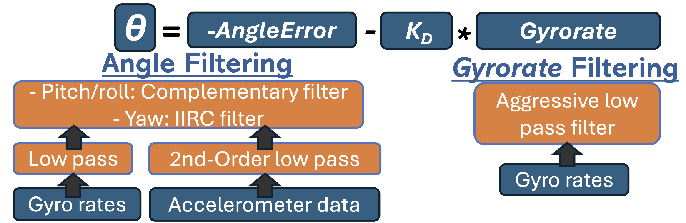

A 640g quadcopter designed and built by 6-person group project team.
During my second-year at the University of Southampton, we were assigned a group project to design a quadcopter UAV weighing less than 640g that houses a payload of a 3-axis gimbal and flight recorder. I was tasked with designing the payload, ran by an Arduino Uno R3.
| All-up weight | 632g (max 640g) |
| Propellers | 4 |
| Fabrication | Plywood cut on a lasercutter |
| Flight computer | Matek F405-Wing, ArduPilot |
| Receiver | FlySky 10-channel, iBUS |
| Camera | ESP32 camera module, triggered by flight computer |
| Gimbal | Arduino Nano + MPU6050, complementary filter, direct angle/rate servo drive |
The gimbal had to be controlled using an Arduino Uno R3 using 3 provided 9g servo motors and an MPU6050 IMU. To simplify design, an open loop control system with the IMU placed on the servo body was used with an addition damping[wp1.1] term to improve the speed of the response. The gimbal also had to feature a horizon or body locking function that could be activated using a switch on the radio transmitter. The horizon lock, points towards a certain stored vector whereas the body lock forces the gimbal to faces forwards (servos all set to 90°).
The provided IMU had significant sensor drift which had to be removed before the signal was usable. Using the gravity vector, the pitch and roll readings were calculated using accelerometer readings.
double roll = atan(accYfilt2 / sqrt(accXfilt2 * accXfilt2 + accZfilt2 * accZfilt2)) * RAD_TO_DEG; //Calculate roll from accelerometer readings
double pitch = atan2(-accXfilt2, accZfilt2) * RAD_TO_DEG; //Calculate pitch from accelerometer readings;The angle rates were then integrated to obtain the orientation angles and fused with accelerometer data (complementary filtering).
gyroYangle += gyroYrate * dt;
compAngleY = AlphaY * (compAngleY + gyroYrate * dt) + (1 - AlphaY) * pitch;
As the gravity vector aligns with the rotation axis for yaw, this drift removal method was not possible so a steady-state bias on start up was recorded and subtracted each loop instead
if (readingCount < 50) {
gyroZsum += gyroZrate;
readingCount++;
if (readingCount == 50) {
steadyStateBias = gyroZsum / 50.0;
timer = micros(); //Reset timer
}
return; // Skip servo control until calibration is complete
}Remove steady-state bias during integration
gyroZangle += (gyroZrate - steadyStateBias) * dt; // Remove steady-state bias A Kalman filter was also tested, however, this provided very unstable movement so was not used.
The provided IMU’s angular velocity measurements were initially very noisy, so multiple filtering techniques were employed to obtain a usable signal for the controller to work with.

Low-pass filtering was used to filter both the angular-rate measurement of roll, pitch and yaw as well as the acceleration recordings in X,Y and Z-directions. Heavier filtering was utilised for the damping term, as well as second order filtering on the acceleration readings to remove noise caused by motor vibrations.
The flight recorder logged IMU readings and servo positions to an SD card for post-flight analysis.
The flight recorder was designed to log critical flight data, including IMU readings and servo positions. This data was stored on an SD card for post-flight analysis, enabling us to evaluate the performance of the gimbal and make necessary adjustments.
The electronics suite included the flight computer, receiver, camera module, and gimbal control system. Careful attention was paid to wiring and power distribution to ensure reliable operation of all components during flight.
A sharp edge at the flap hinge line was causing Fluent to crash. Fixed by adding a small fillet to the hinge geometry in Onshape before meshing.
Spent a debugging session chasing MPU6050 I2C failures — traced to confusing the WHO_AM_I register value (0x70) with the actual bus address (0x68), on top of clone-chip quirks, SD card init issues, and a blocking pulseIn call. Ended the session with the IMU initialized and angle values printing correctly.
Lost an ESC to a bad solder joint, and separately burned out a motor (black windings, no rotation) on the other side. Root cause: one phase connection used a thin jumper wire while the other two used thicker wire, causing a resistance imbalance across phases. Replacing both ESCs with pre-terminated, no-solder connectors to remove that failure mode.
Brought AUW down from ~828 g to ~816 g via trims to the flap, aileron, and fuselage front sections. The wing sections (outer/middle/inner/tip, ~163 g total) remain the largest untouched mass pool for further optimization.